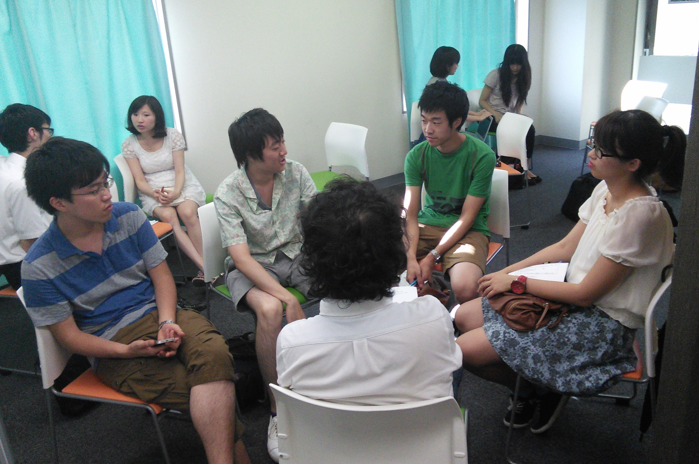

JCSN上海・杭州交流会 第三回ミーティング
8/1に第３回目の上海・杭州交流会のミーティングが開かれました。
今回は上海・杭州交流会のシンポジウムでの議題が決まり、グループに分かれてどのような資料を集め、どのような流れで議論するか考えました。
議題は経済の問題・女性の社会進出の問題・開発の問題・環境の問題に絞られました。
あと数回のミーティングでどこまで各問題について知識を深められるか楽しみです。
＜JCSN上海・杭州交流会 第三回ミーティング概要＞
・日時8月1日（金） １４：００～１7：3０
・場所NPO日中交流推進機構 ６階会議室
・参加者日本人学生、中国人留学生計17名
・タイムテーブル
14:00 議論の進め方についての討論
14:30 議題の選定
15:15 グループ分け
15:45 グループごとの討論
16:30 休憩
16:45 グループごとの討論の続き
17:30 閉会＆近くの店にて懇親会

グループごとの討論の様子